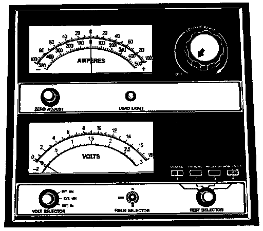
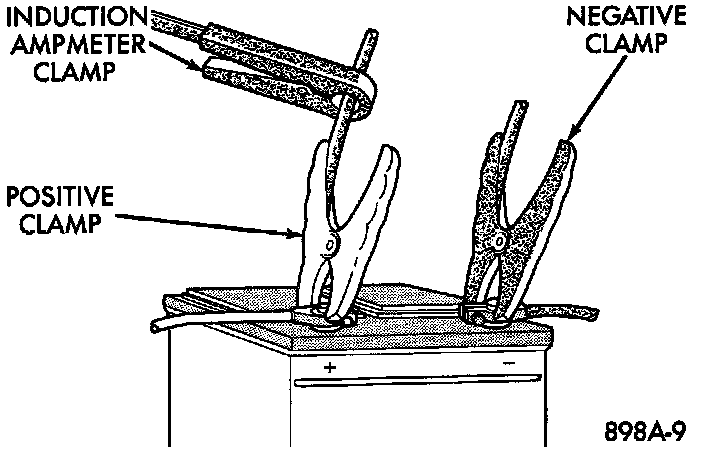
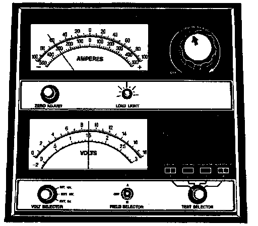
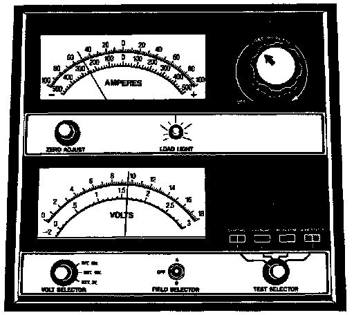
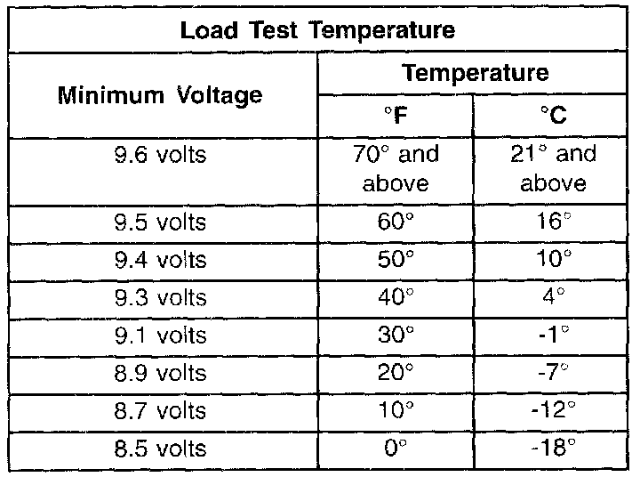

Battery Load Test
A battery load test will verify the battery cranking capacity The test is based on the Cold Cranking Amperage (CCA) rating of the battery Refer to the Open Circuit Voltage battery label, or see the Battery Classifications and Ratings chart in Specifications for the CCA rating of the battery.WARNING:
- IF THE BATTERY SHOWS SIGNS OF FREEZING, LEAKING, LOOSE POSTS, OR LOW ELECTROLYTE LEVEL, DO NOT TEST, ASSIST-BOOST, OR CHARGE. THE BATTERY MAY ARC INTERNALLY AND EXPLODE. PERSONAL INJURY AND/OR VEHICLE DAMAGE MAY RESULT.
- EXPLOSIVE HYDROGEN GAS FORMS IN AND AROUND THE BATTERY. DO NOT SMOKE, USE FLAME, OR CREATE SPARKS NEAR THE BATTERY. PERSONAL INJURY AND/OR VEHICLE DAMAGE MAY RESULT.
- THE BATTERY CONTAINS SULFURIC ACID, WHICH IS POISONOUS AND CAUSTIC. AVOID CONTACT WITH THE SKIN, EYES, OR CLOTHING. IN THE EVENT OF CONTACT, FLUSH WITH WATER AND CALL A PHYSICIAN IMMEDIATELY. KEEP OUT OF THE REACH OF CHILDREN.
- IF THE BATTERY IS EQUIPPED WITH REMOVABLE CELL CAPS, BE CERTAIN THAT EACH OF THE CELL CAPS IS IN PLACE AND TIGHT BEFORE THE BATTERY IS RETURNED TO SERVICE. PERSONAL INJURY AND/OR VEHICLE DAMAGE MAY RESULT FROM LOOSE OR MISSING CELL CAPS.
Before proceeding with this test, completely charge the battery as described in the Battery Charging procedure.
1. Disconnect and isolate both battery cables, negative cable first. The battery top and posts should be clean.
Volt-Ammeter-Load Tester:

Volt - Ammeter Load Tester Connections:

2. Connect a suitable volt-ammeter-load tester to the battery posts. Refer to the operating instructions provided with the tester being used. Check the open-circuit voltage (no load) of the battery Open-Circuit voltage must be 12.4 Volts or greater.
Remove Surface Charge From Battery:

3. Rotate the load control knob (carbon pile rheostat) to apply a 300 ampere load to the battery for fifteen seconds, then return the control knob to the Off position. This will remove the surface charge from the battery.
4. Allow the battery to stabilize to open-circuit voltage. It may take up to five minutes for the battery voltage to stabilize.
Load 50% Cold Crank Rating:

5. Rotate the load control knob to maintain a load equal to 50 % of the battery's CCA rating. After fifteen seconds, record the loaded voltage reading, then return the load control knob to the Off position.
Load Test Temperature:

6. The voltage drop will vary with the battery temperature at the time of the load test. The battery temperature can be estimated by using the ambient temperature during the past several hours. If the battery has been charged, boosted, or loaded a few minutes prior to the test, the battery will be somewhat warmer. See the Load Test Temperature chart for the proper loaded voltage reading.
7. If the voltmeter reading falls below 9.6 Volts, at a minimum battery temperature of 21 °C (70 °F), the battery is faulty and must be replaced.